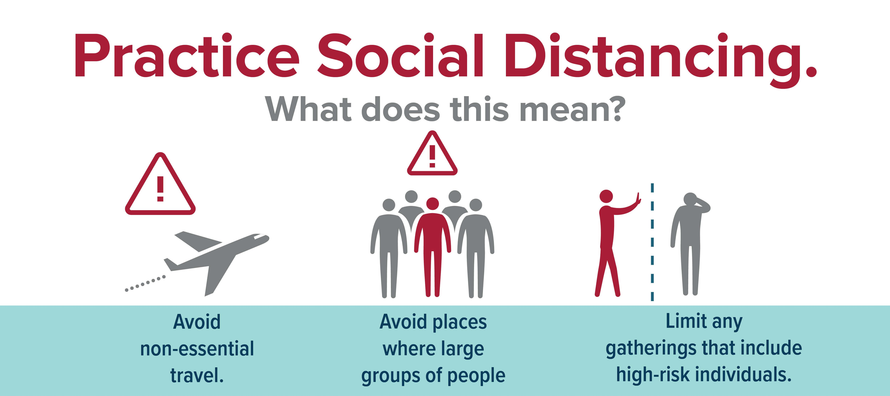

Washing your hands could prevent many different germs, bacteria and viruses from entering your body. It is easy way to keep bacterias and other forms of diseases from affecting you or your loved ones. If you cannot wash your hands, the second best option is to use hand sanitizer and always bring one when going outside.
Here is a video demonstrating how germs could widely spread when not taken good care of it:
To properly wash your hands, firstly WET your hands with clean, running water (warm or cold), turn off the tap, and apply soap. LATHER your hands by rubbing them together with the soap. Lather the backs of your hands, between your fingers, and under your nails. SCRUB your hands for at least 20 seconds. Need a timer? Hum the “Happy Birthday” song from beginning to end twice. RINSE your hands well under clean, running water. Dry your hands using a clean towel or air dry them.
Masks should be worn anytime you are in public or people are nearby. Masks act as a physical barrier to protect you and others from viral and bacterial particulates. Many people unknowingly infect others by going out and spreading germs by coughing or touching others. You can go out in public areas without a mask if there is no one nearby. Otherwise, regardless if it’s close quarters or spaced out, you should wear a mask with others around. This is precaution and courtesy to yourself and those nearby you. Here is a video explaining the effectiveness of face masks.
COVID-19 spreads mainly among people who are in close contact (within about 6 feet) for a prolonged period. Spread happens when an infected person coughs, sneezes, or talks, and droplets from their mouth or nose are launched into the air and land in the mouths or noses of people nearby. By minimizing the amount of close contact we have with others, we reduce our chances of catching the virus and spreading it to our loved ones and within our community.
